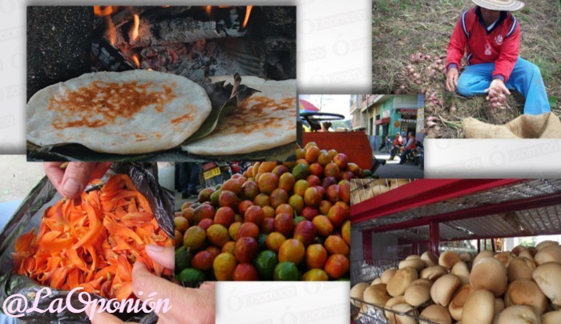

Ocaña
Ocaña, un municipio de rica historia y cultura, se destaca no solo por su belleza natural, sino también por su organización política y sus símbolos que representan la identidad de sus habitantes. A continuación, se presentan dos aspectos fundamentales que reflejan tanto la estructura administrativa de Ocaña como los emblemas que simbolizan su orgullo y valores.

Simbolos patrios
Ocaña es un municipio simbolizado con esblemas como lo son con su bandera, escudo he himno, formando parte de la imagen institucional de la administración municipal. La bandera de los colores: verde, haciendo referencia a la esperanza y blanco, simbolizando la vocación mariana del territorio; Ocaña también es representado mediante su escudo, que identifica sus riquesas naturales, histórica y su grandeza y el himno que exalta sus virtudes y belleza de la ciudad, mostrando el orgullo y amor de los habitantes de nuestra tierra.

Division Politica
El municipio de Ocaña está dividido en 18 corregimientos, los cuales son: Agua de la Virgen, Cerro de las Flores, El Palmar, El Puente, Espíritu Santo, Las Chircas, Las Liscas, Llano de los Trigos, Mariquitas, Portachuela, Quebrada de la Esperanza, Venadillo; además de Aguas Claras, Buenavista, La Ermita, La Floresta, Otaré y Pueblo Nuevo, siendo estás últimas centros poblados. Sin olvidar que este municipio está constituido por 6 comunas: José Eusebio Caro, Cristo Rey, Olaya Herrera, Adolfo Milanés, Francisco Fernández de Contreras y Ciudadela Norte.
Geografía
Ocaña es una ciudad en Colombia, en un valle con el río Grande al oeste. Tiene una altitud de 1,183
metros y un clima de 17°C. Su relieve variado incluye grandes montañas que impiden la expansión urbana.
Con 632.27 km² de extensión, parte urbana y parte rural. El clima varía entre frío y calor, con lluvias
en marzo, abril, agosto, septiembre, octubre y noviembre. La ubicación geográfica beneficia la vida
cotidiana de los habitantes de Ocaña.

Economía
Ocaña, un municipio con una amplia variedad de actividades económicas, se destaca por su comercio,
pequeñas industrias y agricultura, especialmente en cultivos como el tabaco, aguacate, cebolla roja,
piña, frijol, frutas y verduras. Además, la minería es importante en la región, con exportaciones de
plata, cobre e hierro. El turismo también es relevante, con sitios históricos como el santuario de
Nuestra Señora de Torcoroma y la columna de la libertad de los esclavos.